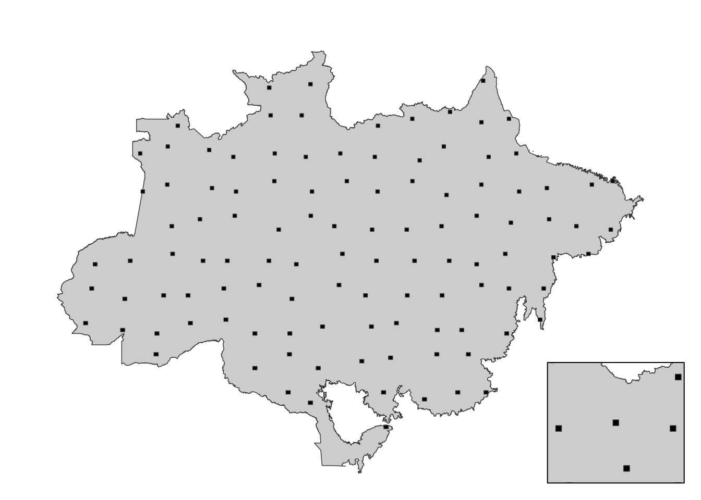

Using remote sensing data to estimate short term effects of fire over forest aboveground biomass in the brazilian amazon
Abstract
The objective of this experiment is to estimate the effect of forest fire over the biomass of tropical rainforest in the brazillian amazon. The analysed aboveground biomass are predictions derived from Global Ecosystem Dynamics Investigation (GEDI) Level 4A (L4A) Version 2. The experimental design is based in the sampling areas of 25 hectares over the brazillian amazon biome, where burned forest areas are compared to intact forests. The fire estimates are derived from the Moderate Resolution Imaging Spectroradiometer (MODIS) Burned Area data product (MCD64A1 Version 6). We expect to estimate a distribution of effects for the entire biome, which will allow the discussion about its possible heterogeneity and confounders.
Introduction
The effect of fire over forests have already been estimated in different studies. A field study found effects after a single burning event, in which the biomass reduction increased with more occurrences of fires (Silva Ramos Vieira Martins et al. 2012). Studies also reported how trees characteristics also influence the impact of fire over forests (Rocha et al. 2013).
Objectives
The objectives of this project are:
Estimate the effects of fire occurrence over tropical rain forest above ground biomass;
Identify the main drivers of heterogeneity of the effects;
Materials and Methods
Experiment Scopus
The experiment will be performed within the Brazilian boundaries of the Amazon biome, in which we will analyse its forests formations. The experiment will cover the period between 2000 to 2021. We will analyse forests formations of any characteristics, and forest fires of any characteristics.
Experiment Design
To estimate the effect of forest fires over forest formations, we are going to compare two different groups: the control group (NB), that are forest formations in which fire occurrence was not detected from 2010 to 2021 (in other words, we assume this area was not burned in this period); the event group (YB), that are forest formations in which fire occurrence was detected only in 2020, in the period between 2010 and 2021. We will calculate differences between both groups before and after 2020 (which is the year when the fire event occurred or not). We will adjust our estimates for distance of the forest formations to the edge of forest, which may cause possible bias in our analysis. A general overview of the experiment is shown in Figure 1.
To extract observations of each group, we will use land cover and fire occurrence data (Section 3.0.6). Only a small subset of the whole data available is going to be used to make inferences, and will be performed by a sampling scheme. The sampling scheme will consist of four steps: 1. randomly assign rectangles of ~10000km² inside the Brazilian Amazon biome, spaced at least by ~100km between each other, these are going to be named major sample cells (MaC); 2. randomly assign one rectangle of ~400km² inside each MaC, these are going to be named minor sample cells (MiC); 3. randomly assign 100 rectangles of ~0.25km² (50 NB rectangles and 50 YB rectangles) inside each MiC, NB rectangles will have to be at least 2km far from YB rectangles, these will be named observation cells (ObC); 4. extract values inside each ObC. This process will be repeat 100 times, in which we will shift the MaC positions to ensure more heterogeneity between sampling rounds.

We are going to use the following variables: above ground biomass, fire frequency, fire occurrence in 2020, experiment group, forest cover percentage inside burned pixel, fragmentation of the sampling rectangle, distance of observations to border.
We will also apply a filter to the MiC, to avoid regions in which we don’t have a lot of areas of internet (areas where we can sample NB and YB observations). The rule will be that apt areas for both experiment groups should cover at least 30% of the MiC, each.
Data processing
Statistical analysis
To estimate the effect of fire occurrence over forest above ground biomass, we are using diff-in-diffs, by comparing the AGB values before and after the fire event for NB and YC areas. The analysis will be performed in a monthly time step, and will be represented as months before and after the event.
We will use a ordinary least squares regression to perform the estimations. Since we are analyzing spatial data, there is a possibility of spatial auto correlation to affect our statistical model, so we will analyse the model residuals to detect possible spatial dependence between observations. If the autocorrelation are found to be true, we will apply spatial regressions to try to adjust the model for spatial dependence.
By the end of the statistical analysis, each sampling rectangle will present an average effect estimation.
To analyse the heterogeneity of the effects of fire over above ground forest biomass, we will observe the range of effects found inside and between the ObCs.
Statistical model assumptions
The statistical model in this study assumes that the occurrence of droughts and the distance to the forest edge are confounders of the effect of fire over forest biomass. We will adjust our model to the distance of observations to forest edges explicitly, by adding this variable in the regression. We will avoid the confounding of droughts by analyzing the experiment groups in a relatively small region, in which will assume will present homogeneous climate characteristics.
We aknowledge that there are more confounders of the effect of fire over forest biomass, but these are difficult to add in our model, specially due to the large scale of the experiment. We will provide a diagram of all the possible confounders found in the literature, so that it can be compared to the diagram that expresses the statistical model of this project (Figure 3).
We also make other assumptions for the statistical models:
The sampled forest areas are assumed to remain forests by all the period of the experiment;
We assume parallel trends between YB and NB groups (if fire did not occur in YB, differences between the two groups post-event period would remain the same in relation to the pre-event period)
Data Sources
The fire occurrences are going to be extracted from MODIS MCD64A1 (Giglio et al. 2015) Version 6 product, which provides world wide burned area estimates from 2000 to 2022. The spatial resolution is approximately 500 meters. Maybe change it to the Global Fire Emissions Database (GBEF)
Forest cover will be represented by the Global Forest Change (1.9) (Hansen et al. 2013), which provide forest cover loss from 2000 to 2021. The spatial resolution is approximately 30 meters.
Biomass estimates will be provided by the GEDI L4A 2.1 Footprint Level Above ground Biomass Density product (Dubayah et al. 2022), with temporal extent from 2019 to 2022. The spatial resolution is approximately 25 meters.
Literature
The discussion of our results are going to be discussed against a predefined literature. We performed a search in the Scopus database.
TITLE-ABS-KEY((fire OR burn) W/10 (forest OR tree) W/10 (carbon OR biomass OR cover OR volume OR density)) AND TITLE-ABS-KEY(amazon) AND (LIMIT-TO(LANGUAGE, “English”))
The search returned 106 results, after screening (the strategy was to read titles and abstract, and select studies related to the estimation of the effect of fire occurrence over forest biomass).
The literature will serve, besides providing the theoretical foundation for the project development and future discussions, as a base to identify possible causes of forest above ground biomass loss. A DAG will be created with information obtained from the literature, and will be compared to the DAG of this experiment.
Results
Effect of fire occurrence over forest above ground biomass
We will show a table with the summary values of our model.
We will present a figure using lines (average values) and shaded areas (uncertainty of values) to represent the biomass variation along the months from 2019 to 2021.
We will also present density plots showing the average effect and the uncertainty of the effect.
Sources of effect heterogeneity
We will show a map with hexagonal grid to represent spatial heterogeneity of the effects.

Discussion
Compare our results with values found in field experiments and from other models.
Discuss probable sources of uncertainties and heterogeneity of the effects.
Provide further paths for the area of study.
Conclusions
Supporting Information
Provide all code and data to ensure transparency and reproducibility.
References
Dubayah RO, Armston J, Kellner JR, et al. 2022. GEDI L4A footprint level aboveground biomass density, version 2.1.
Giglio L, Justice C, Boschetti L, and Roy D. 2015. MCD64A1 MODIS/terra+aqua burned area monthly L3 global 500m SIN grid V006.
Hansen MC, Potapov PV, Moore R, et al. 2013. High-resolution global maps of 21st-century forest cover change. Science 342: 850–3.
Rocha W, Metcalfe DB, Doughty CE, et al. 2013. Ecosystem productivity and carbon cycling in intact and annually burnt forest at the dry southern limit of the amazon rainforest (mato grosso, brazil). Plant Ecology & Diversity 7: 25–40.
Silva Ramos Vieira Martins F da, Xaud HAM, Santos JR dos, and Galvão LS. 2012. Effects of fire on above-ground forest biomass in the northern brazilian amazon. Journal of Tropical Ecology 28: 591–601.
Reuse
Licensed by CC BY-NC-ND 4.0